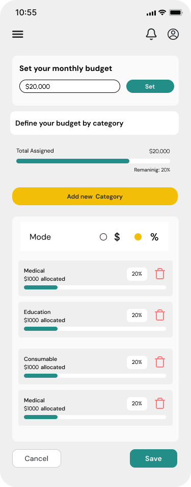
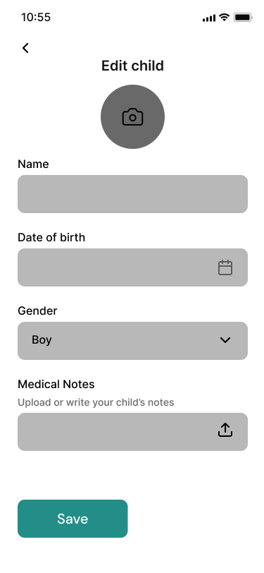
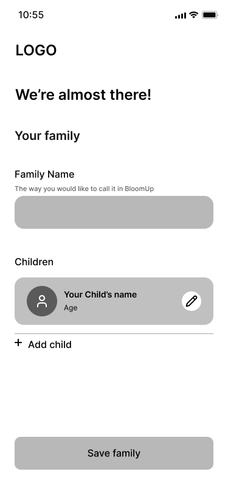
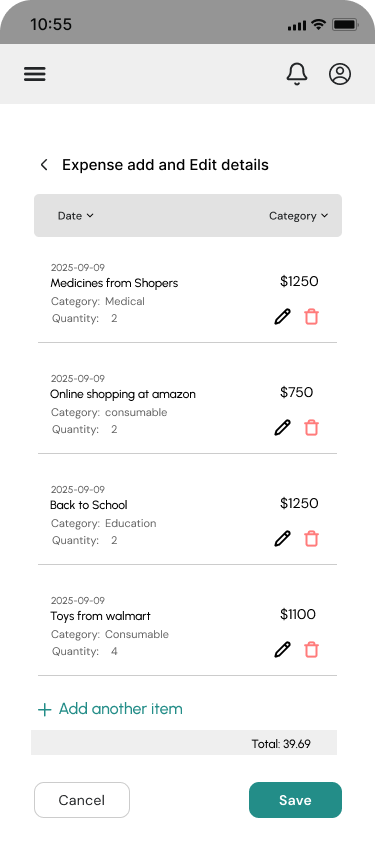
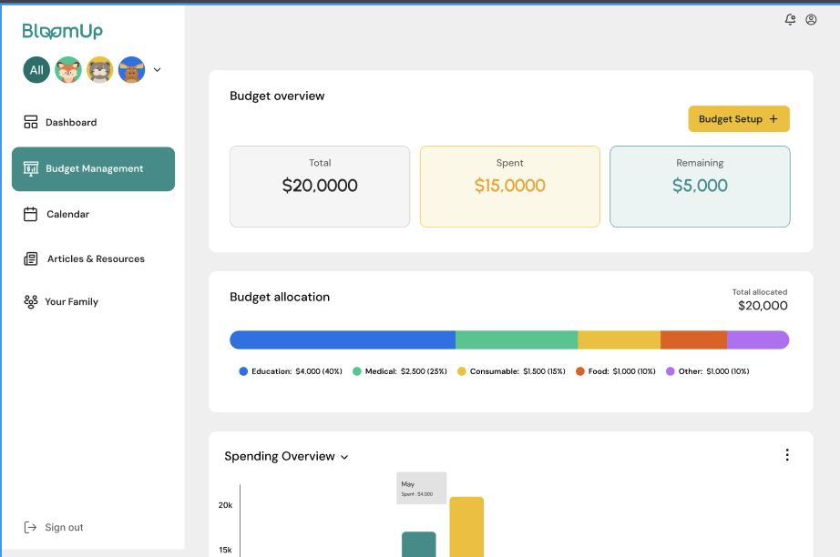
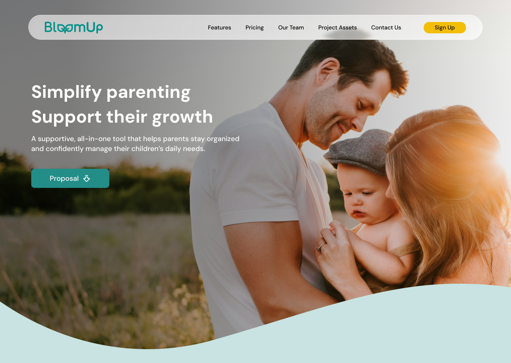

Join BloomUp
Create an account or sign in.
Parenting Support Platform
BloomUp is a responsive parenting support platform designed to help new parents find reliable guidance, track important milestones, and connect with supportive communities in one clear and welcoming experience.
View Figma
BloomUp was created for new parents who often have to search across many websites, forums, and apps to find trustworthy information. The experience brings practical guidance, milestone tracking, and community support into one organized platform.
The design prioritizes calm language, clear navigation, and easy access to the right resource at the right time. Parents can learn, track progress, ask questions, and feel less alone without being overwhelmed by information.
Early wireframes focused on a simple dashboard, resource discovery, milestone tracking, and community conversations. The goal was to make important information easy to scan while keeping the experience warm and approachable.


New parents often struggle to judge which information is trustworthy, keep track of changing needs, and find supportive communities without switching between disconnected services.
Reliable parenting information is scattered across many sources.
Parents can feel overwhelmed by conflicting advice and opinions.
Milestones and daily progress are difficult to track consistently.
Many new parents lack an accessible, supportive community.
Browse practical, organized parenting information designed to be easy to understand and revisit.
Connect with other parents, share experiences, and ask questions in a welcoming space.
Record developmental milestones and keep important moments organized over time.
Access clear advice and educational content from trusted parenting professionals.
This flow maps how a new parent creates a personalized account, finds guidance, and tracks information relevant to their child.
Create an account or sign in.
Enter age and basic information for personalization.
See resources, milestones, and community activity.
Select resources, milestones, advice, or community.
Read information or open a discussion.
Bookmark a resource or record a milestone.
Get reminders and recommendations.
Return to saved content and milestone history.
A calm overview of saved resources, upcoming milestones, recent community activity, and personalized suggestions.

Organized articles and expert guidance help parents quickly find relevant information by topic and stage.

Discussion spaces make it easy to ask questions, share experiences, and connect with other parents.

A clear timeline helps parents record developmental moments, notes, and progress in one place.
Nunito Sans + Lora
Nunito Sans feels approachable and friendly, while Lora adds warmth to longer supportive content.
Learned how to simplify complex room planning into an intuitive, approachable workflow.
Improved my UX research and usability testing process through iterative rounds of feedback.
Designed a scalable interface that balances inspiration with practical, confident decision-making.